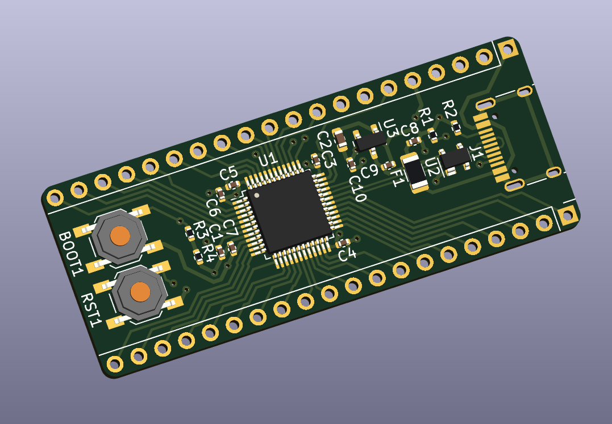

This project template contains:
- an STM32F072 in the LQFP-48 package
- all supporting passives
- USB Type-C 2.0 UFP port
- 2x 20-pin 2.54mm headers
Components are placed on one side and routed for easy access to all GPIO.

(c)2024 Noah Kiser